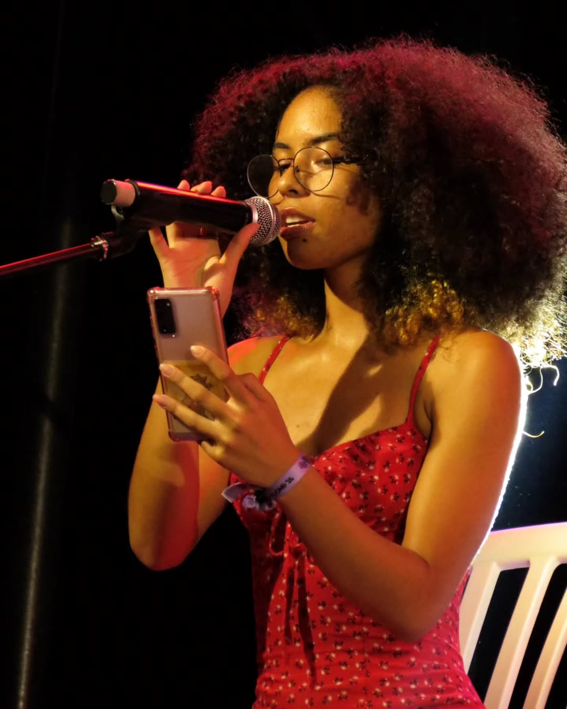

Sou estudante de Ciências de Computação, também sou Técnica em Informática para Internet, título que conquistei no ensino médio. Trabalhei em alguns projetos onde ensinei programação para meninas, além de ser mentora e inspiração para elas como mulher na área de tecnologia. Participei de competições de programação e hackathons, participei de um projeto voluntário beneficente na universidade e organizei a Semana da Computação.
Meus três animes favoritos:
- Re:Zero
- Soul Eater
- Houseki no Kuni
Três coisas que eu gosto:
- Esportes
- Carinho
- Estrelas
Links relevantes:
Meu GitHub Meu Instagram Meu LinkedIn Um vídeo muito legalCuriosidades sobre mim:
Gosto muito de cantar
Canto desde que me entendo por gente e é uma coisa que eu gosto muito de fazer, independente de gênero musical. Vou me apresentar hoje também inclusive KKK
Arcane
Série MUITO BOA não tem como, não sei nem o que dizer, é perfeita, apenas assista. E sou apaixonada na Vi e no Ekko.